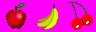

... Pacman Code ...
... Pacman Code ...
Section 21: Introducing Spritesheets
Setup
As we saw in the last section, drawing an image to the screen using an image file is really easy. We can go ahead and make all of the image files we want for all of our objects. Nothing wrong with that, it's just that's not the best practice. Even the simplest of games use a lot of images for various things. Not only that, but a lot of images have animation. If your character has 8 frames of animation while walking, then that's 8 separate images just for your one character, and that's just for walking. If you want to animate your character running, or jumping, or anything else, then that's even more images just for one character. Add up all of the animations you want to do for all of the characters in the game, and you're looking at possibly hundreds of images. That's a lot, and it's not very efficient to handle images as separate files because you have to open and close every image. It's better to group all of the images into one file, and just extract the image you want from this file. This file is refered to as a spritesheet, because it's a sheet that contains sprites.
The image on the right shows a small example of a spritesheet. This sheet just shows three images of fruit. These are just three of the fruits that we'll use in the game: an apple, banana, and cherries. It's up to you how you want to organize the sprites in your spritesheet. Just as long as you know how to extract them, which we'll get into in a bit. You can have them scattered, but it's better to use as less space as possible so grouping sprites of similar size together in rows and columns is usually how I do it. In the image on the right, the sprites are arranged in 1 row and three columns and they are all the same size. In this section we're going to write up code that extracts the images from this spritesheet and displays it in the game. The code that we write here will be used when dealing with much larger spritesheets later.
Get Ready for the Images
Modify the entities.py file
We will include an image variable and set it to None. When we start to replace the basic shapes with actual images, then this will contain those images we want to show.
self.image = None
Modify the render method
If we have an image to draw to the screen, then draw that image, otherwise draw the basic shape we've always been drawing.
def render(self, screen):
...
if self.image is not None:
screen.blit(self.image, (px, py))
else:
pygame.draw.circle(screen, self.color, (px, py), self.radius)
Get Image Clips
Create a new file called spritesheet.py
We will create a new file which will define a new class that will handle our sprite sheet. Right now we will say that our sprite sheet is the image with the three fruits. It will actually contain all of the graphics our game needs. There's a method called getImage which will clip out an image from the sheet given the (x, y) position and the width and height of the image.
import pygame
from constants import *
class SpriteSheet(object):
def __init__(self):
self.sheet = pygame.image.load("Images/fruit.png").convert()
self.sheet.set_colorkey(TRANSPARENT)
def getImage(self, x, y, width, height):
x *= width
y *= height
self.sheet.set_clip(pygame.Rect(x, y, width, height))
return self.sheet.subsurface(self.sheet.get_clip())
Modify the gamecontrol.py file
We need to import the class we just created and make an instance of it.
from spritesheet import SpriteSheet
Modify the __init__ method
We only need one sprite sheet.
self.sheet = SpriteSheet()
Modify the checkPelletEvents method
Right now we're only using the sprite sheet for the fruit. When creating the fruit we need to pass in the sprite sheet.
def checkPelletEvents(self, dt):
...
self.fruit = CollectedFruit(self.nodes, self.level, self.displayedLevel, self.sheet)
Modify the fruit.py file
Modify the CollectedFruit class
Modify the __init__ method
We need to modify this so that the fruit can accept the sprite sheet. All of the fruit images will be 32x32 pixels so we can hard-code that in here.
def __init__(self, nodes, level, displayedLevel, sheet):
self.name = "fruit"
self.sheet = sheet
self.width, self.height = 32, 32
...
Modify the chooser method
Right now we only have three images on the sprite sheet: an apple, banana, and cherries. So when we create those objects we need to pull the right image from the sprite sheet. I know where those images are so we can just pass in their coordinates. I don't think we'll be able to automate this. We have to know the actual coordinates and the size of the images we want to clip from the sprite sheet. Maybe the SpriteSheet class can keep track of all of the image locations and dimensions so that there's only one place to modify that information. We'll figure that out later.
def chooser(self, level):
level %= 5
if level == 0:
...
self.image = self.sheet.getImage(64, 0, self.width, self.height)
elif level == 1:
...
self.image = self.sheet.getImage(32, 0, self.width, self.height)
elif level == 2:
...
self.image = self.sheet.getImage(0, 0, self.width, self.height)
Modify the DisplayedFruit class
Modify the __init__ method
We get the image from the CollectedFruit class.
self.image = fruit.image
self.width = fruit.width
Modify the setPosition method
We need to modify the positions of the displayed fruit because of the difference in drawing images and drawing circles to the screen.
x = WIDTH*NCOLS - (5 + self.width) * (index + 1)
y = HEIGHT*(NROWS - 2)
Modify the render method
Similar to how we modified the MazeMouse class.
x = int(self.position.x)
y = int(self.position.y)
if self.image is not None:
screen.blit(self.image, (x, y))
else:
pygame.draw.circle(screen, self.color, (x, y), self.radius)
Conclusion
This section introduced the concept of the sprite sheet and how to get images from the sprite sheet. Right now we are only using the sprite sheet for the three pieces of fruit. In the next section we are going to take a big leap and define the spritesheet for all of the images we want to use in the game.
File Structure
- Pacman
- constants.py
- entities.py
- fruit.py
- gamecontrol.py
- ghosts.py
- home.txt
- lifeicons.py
- maze1.txt
- maze2.txt
- nodes.py
- pacman.py
- pellets.py
- spritesheet.py
- stacks.py
- vectors.py
- Images
- pacman.png